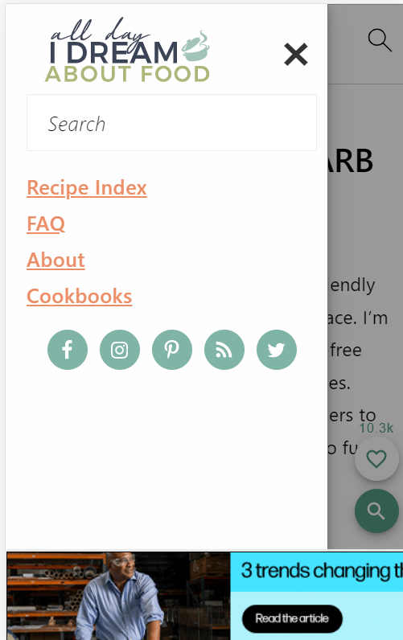
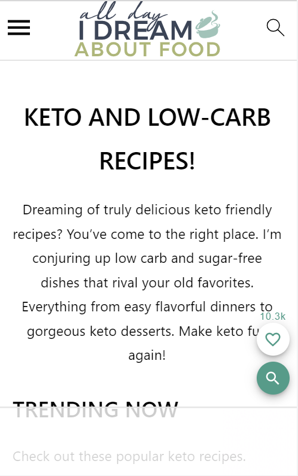
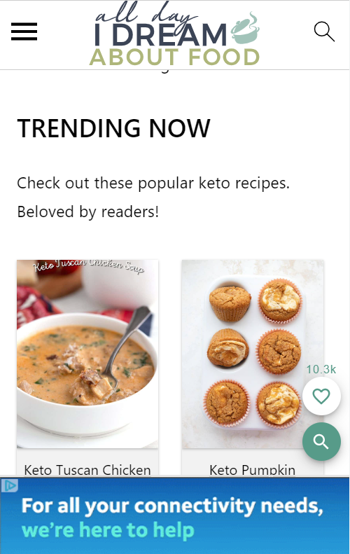

Visual Heirarchy
All Day I Dream About Food When clicking on the pull down menu, which is in the right upper corner, your eye follows the page easily. The text is very easily understood, with a natural feeling while navigating.
Rule of Thirds
All Day I Dream About Food Following the rule of thirds, this website is easily navigated and the information is readily available. Even the pop up adds follow the rule of thirds, they do not overtake the site or hinder navigation.
White Space and Clean Design
All Day I Dream About Food This site is an excellent example of white space. The site feels clean and organized. Even in the small viewing space, it's not crowded. While there is a bit of scrolling, everything is clear and easily seen.